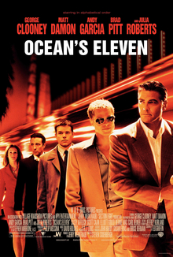
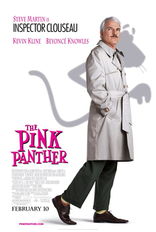

Ocean's Eleven was the fifth highest grossing movie of 2001, and there is so much going for it. Stunning Las Vegas scenery, the cream of Hollywood stars, and a twisting and turning plot makes this remake of the 1960 Rat Pack classic the inspiration for a film series. The most commercially successful was the first film, Ocean's Eleven (2001). It established the ensemble cast of George Clooney as Danny Ocean, Matt Damon as Linus Caldwell, and Brad Pitt as Rusty Ryan. A long list of supporting cast members maintain the trilogy.

Currently you are able to watch "The Pink Panther" streaming on Amazon Prime Video, fuboTV, Paramount Plus Apple TV Channel , MGM Plus Amazon Channel, Paramount+ Roku Premium Channel, MGM Plus Roku Premium Channel, MGM Plus, Spectrum On Demand or for free with ads on The Roku Channel, Tubi TV.How to Watch The Pink Panther. Right now you can watch The Pink Panther on Netflix. You are able to stream The Pink Panther by renting or purchasing on Amazon Instant Video, Google Play, iTunes, and Vudu. You are able to stream The Pink Panther for free on Tubi.
Both franchises have become iconic in mainstream media, garnering a dedicated and loyal fanbase. Each supernatural series showcased several qualities that often drew from each other's flaws. The Vampire Diaries surpassed Twilight in ways - but conceded defeat in others.The Originals has way more violence and it's ten times more intense than TVD. Klaus is the bad guy, and he remains the bad guy for the entire show (unlike Damon Salvatore). The Originals is much darker and more mature than The Vampire Diaries ever was.